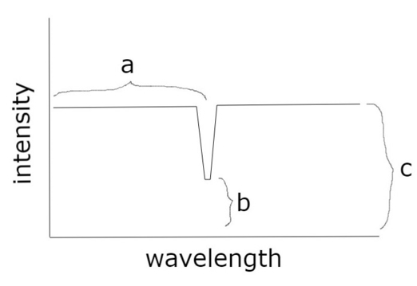

Because humans have three kinds of cones: light receptive cells in our retina that are sensitive to different wavelengths of light. We have cones that correspond to red (long wavelength), green (medium wavelength), and blue (short wavelength), which are the three dimensions of human color vision.
Next question: why do we have three kinds of cones? Why not two? Five? 16? There may be no good answer to this, as many species have different numbers. But I will offer my speculation.
The conclusion is that most light intensity profiles we see look something like this:
With some intensity of background light (c), and an anomaly of some intensity (b) at some wavelength (a). This is three dimensions, so three cones are needed in order to perceive all combinations of these parameters as different, and additional cones only provide information about deviations from this family of profiles.
And that's really the whole argument. But let's unpack it a bit.
The value (a), or perhaps some weighted average of (a) and (b) depending on how broad our anomaly is, corresponds to the dimension of lightness. We also have rods, which only detect lightness, but they seem to me to be generally redundant with the combination of cones. I'm not sure why. Were they not redundant, this argument would not apply.
The value |(a)-(b)| represents the difference between the background light and the anomaly, or how far the light profile is from gray (a simple uniform intensity). This is saturation.
The values of lightness and saturation have interpretations for any number of cones: lightness is the sum of cone intensities, and saturation is some kind of variance (I think usually the maximum difference) between the various cone intensities. "Hue" refers to all remaining degrees of freedom, and has dimension equal to the number of cones minus 2 (for lightness and saturation).
Geometrically, we may view the space of cone activations as an n-dimensional cube - one axis per cone, ranging from no activation to max activation. Lightness is distance along the diagonal from the black corner (all cones have no activation) to the white corner (all max). Saturation is distance from this diagonal. Hue is what remains. In the case of three cones, the final degree of freedom is circular, representing the angle around the diagonal. For more cones, hue space will always be spherical (of some dimension). It can also be viewed as a simplex, with the vertices as the primary colors of light.
The color wheel is our hue space, and the spectrum of wavelengths can be mapped nicely onto it. That is another way of phrasing our conclusion about why three cones is special - because our hue space is the same dimension as wavelength space. With four cones, hue space would be a sphere, and any mapping of the spectrum onto that sphere will waste space. Of course, it's better for more complex light intensity profiles.
That's all. I don't know how accurate my caricature of light profiles is, or if that's the reason why we have three cones, but it is an interesting property I noticed. Let me know what you think!